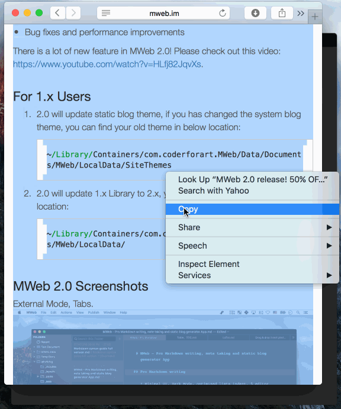

MWeb 2.0.7 版发布！
更新前针对 MAS 上的评论重点说一下：MWeb 是支持直接对本地文件夹操作的，不用导入到文档库！请使用外部模式！请使用外部模式！！请使用外部模式！！! 重要的话讲三次！使用方法是 CMD + E 打开外部模式并把文件夹拖进左侧即可。
重要说明： Mac App Store 版已提交审核，还没正式发布，想必明天应该是能通过。官网版已经可以更新了。
这次的更新主要是修正一些 bug, 详细为：
- 加把 HTML 粘贴为 Markdown 的功能，在菜单： 编辑 - 把 HTML 粘贴为 Markdown。提示：此功能可以快速把网页上的内容保存为 markdown，下面有 gif 演示。
- 加支持打开所有扩展名的文档。
- 加重新加载文档库的功能，菜单：文件 - 重新加载文档库。
- 加：当当前视图模式为仅预览模式时，用 CMD + P 会打印当前预览的结果。
- 正 CMD + Shift + S 复制文件的 bug
- 正预览可能会变空白的问题
- 正在表格编辑中，如果有 LaTex 公式，再编辑时公式会出问题的 bug。
- 它的一些 Bug 修正和性能提高。
把 HTML 粘贴为 Markdown 功能演示：
这个功能默认会把远程的图片保存到本地，如果你不想保存图片，可以使用 CMD + Shift + N 新建文档再用此功能。
